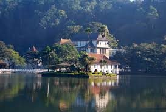
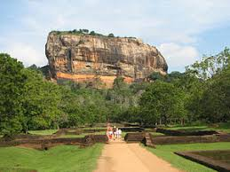
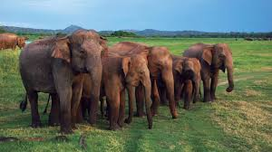

SRI LANKA TRAVEL AND TOURISM | SRI LANKA TRAVEL AGENCY | BEST TOUR OPERATOR 2019 ---- INFO@SRILANKATRAVELANDTORUISM.COM
Destination
 Anuradapura The ancient city of Anuradhapura was quite large in its heyday, and so there is a lot of archaeology to see. More Details |
 Kandy Kandy is very popular due to the annual pageant known as the Esala Perahera and The Royal Botanical Garden. More Details |
Dambulla It's glory is recognised and that is why it holds the title of a world heritage site, Dambulla Cave Temple lies in the.. More Details |
 Sigiriya The spectacular 'Lion rock' fortress, stands majestically overlooking the luscious green jungle surroundings. More Details |
Arugam bay The Arugam Bay territory is known for its quality surf breaks. The 'Main Point' is one of the main surfing areas of the Bay.. More Details |
 Trincomalee Trincomalee is a natural deep-water harbor that attracted great sea farers like Marco Polo... More Details |
Unawatuna Unawatuna beach is a beautifully stretched area of land covered with sand that can raise the standards of any holidays with its exotic view More Details |
 Nilaveli The natural harbour and beach is one of finest in the world. Nilaveli is an ideal place for water sports like scuba diving. More Details |
Kumana Kumana National Park is home to some famous mammals the likes of elephants, leopards and deers etc. It's said that some rare birds.. More Details |
 Udawalawe Udawalawe is filled with huge parks that were built to provide an alternate experience of wildlife.. More Details |
Wilpattu Wilpattu National park is especially known for its population of Leopards who are the main source of entertainment.. More Details |
Yala one of Sri Lanka 's premier Wildlife destinations, home to many Elephants, Leopards, Sloth Bears, Crocodiles and more. More Details |
+94 999 888 111 info@sltravelandtourism.com © 2019 Sri Lanka Travel & Tourism